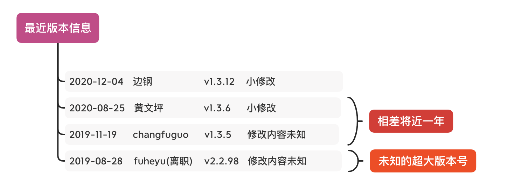
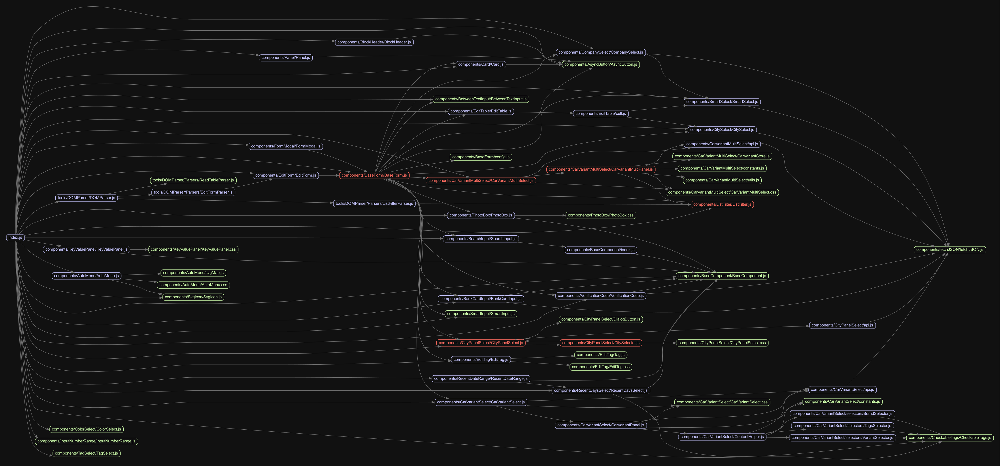

Zen Reborn 计划
Contents
背景
作为业务组件库，zen在多个租车B端系统中被广泛使用。
zen在提高租车B端的研发效率的同时，保证B端系统的UI和交互的一致性。
但是当初的维护人员已离职或者转岗，没有专人(团队)维护
- 最新版本为v1.3.12，发布时间2020-12-04 11:15:24，发布人在职。小修补
- 最大版本号v2.2.98，发布时间2019-08-28 11:21:43，发布人已离职。找不到该版本的信息
- v1.3.5 发布时间 2019-11-19 11:13:56 ，v1.3.6发布时间 2020-08-25 19:38:05。间隔了将近一年。同样找不到v1.3.5的记录

当前现状

组件使用情况

所以，这件事情是有必要做的
改进计划

上图是第一次分析时得出的初步计划，在仔细研读zen现有的代码和设计的时候遇到了下面几个比较头疼的点
- React版本16.3.0和Antd3.x，有很多API提示将要废弃。在此基础上改造收益不高
- 工程化相关的配置比较老旧和冗余，改造成当前流行的最佳实践成本较大
- 新增业务组件必须使用老版本的react和antd，开发人员积极性不高
所以决定
- 原有版本继续维护，只做bugfix
- 开启新项目zen-next(zen2.0)
新老项目并存必然会带来一些问题
- 老项目新旧版本如何共存？
- 新老版本依赖了不同版本的react和antD，是否会存在冲突或者冗余，如何解决？
首先明确一点，新老版本共存这个事实将会客观存在，并且将存在一段时间。子应用中可以使用新版本，老系统可以暂时不用care。随着子应用的逐个拆分，老系统最后将会边成一个架子。当不在有项目依赖老版本zen时，zen就可以退出历史舞台。
关于依赖的问题，对于组件库来说，第三方依赖不应该被包含在产出物中，尤其是React,antd之类的超级依赖，(一些小体积的辅助工具可忽略，比如按需引入的lodash函数)。所以zen-next的产出物会将不包含react antd。目前老系统和zen-pc-bc 都是将二者打包在产出物中，所以不会存在冲突。

Zen-next
首先对zen-next的提出几个要求：
- 详细的使用文档
- 兼容的API设计
- 标准的协作共建
- 舒适的研发体验
接下来按照下面几个步骤来一步步开始和完善zen-next
- 制定规范
- 确定需要改造和迁移的组件
- 确定API
- 评审
- 开始开发
- 重复步骤2
项目规范
项目目录
|
|
组件规范
|
|
具体细节可查询项目 docs 目录
代码规范
ESLint 和 PrettierJS
为了减少对某些约束的无意义的讨论，采用社区推荐的规范。项目使用 React 和 TypeScript开发，所以使用 @typescript/parser 作为parser，配合 eslint-plugin-react ，再加上少许定制。
而在代码格式方面则使用PrettierJS推荐的配置。
提交规范
毫无疑问，采用推荐的 约定式提交。 为提交信息增加人机可读含义的规范。
为什么使用约定式提交
- 自动化生成 CHANGELOG。
- 基于提交的类型，自动决定语义化的版本变更。
- 向其他人传达变化的性质。
- 触发构建和部署流程。
- 让人们探索一个更加结构化的提交历史，以便降低对你的项目做出贡献的难度。
具体细节可查询 约定式提交 。
在约定式提交的基础上，使用 standard-version 可以按照 semver标准来实现自动更新版本号和更新 ChangeLog.md。
工程化

完善的工程化设计，能够很好的帮助开发。
高优迁移的组件
使用工具 madge 分析zen的代码依赖，得到下图

结合前面提到的组件使用情况统计
同时对每个组件单独进行依赖分析可以发现最为复杂的是：BaseForm

BaseForm是ListFilter、FormModal、EditForm的下层依赖，而BaseForm又依赖了以下这些组件
- SmartSelect
- BankCardInput
- VerificationCode
- CitySelect
- CompanySelect
- SearchInput
- EditTable
- BetweenTextInput
- CarVariantMultiSelect
- CarVariantSelect
- CityPanelSelect
- PhotoBox
- Card
- SmartInput
- AsyncButton
- EditTag
所以重构迁移过程中首先以这些为主
Author 张伦
LastMod 2020-09-20